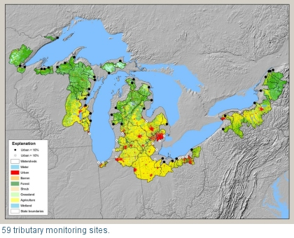

Determine Baseline and Sources of Toxic Contaminant Loadings
Template #78

U.S. Geological Survey is identifying the types and locations of emerging and legacy toxic contaminants in the water and sediments at 59 major tributaries to the Great Lakes (including many Area of Concern sites).
Eight major tributaries of the Great Lakes have been sampled for 22 waterborne pathogens, human-specific fecal indicator bacteria, the USGS wastewater schedule, mercury, organic carbon, and optical properties of wastewater. Sediment traps were installed at 15 AOC (Areas of Concern) sites. The sediment was analyzed for over 150 constituents including PAHs, total PCBs, and pharmaceuticals. At 59 major tributary sites, passive sampling devices were installed, including POCIS (Polar Organic Chemical Integrative Sampler) samplers that monitor hydrophilic contaminants which could be potentially toxic. SPMD (Semi-permeable membrane devices) designed to mimic biological membranes, such as the gills of fish, were also installed. Water Samples for mercury and organic contaminants were collected at time of installation and a second sample was collected in the summer of 2011. At 17 tributary monitoring sites, samples are collected monthly and during events and analyzed for chemicals of emerging concern. These sites are a mix of land use including agricultural, urban and reference conditions. Ten of the sites are at AOCs.
This information is needed by decision makers to help prioritize watersheds for restoration, develop strategies to reduce contaminants, and measure the success of those efforts in meeting restoration goals.
Preliminary results indicate substantial human waste presence in all streams, but results have shown considerably higher concentrations of human-specific bacteria and human pathogens in five of the eight streams.
Steve Corsi, srcorsi@usgs.gov 608-821-3835